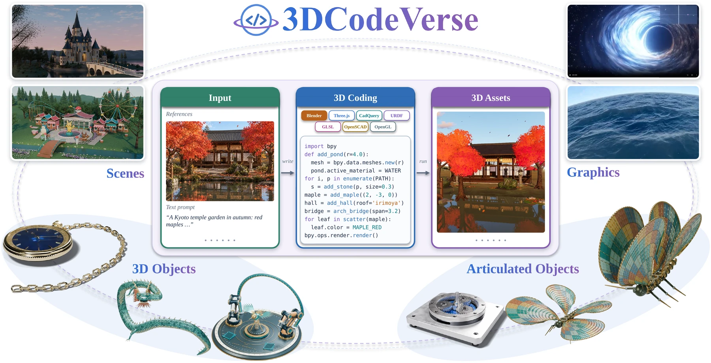
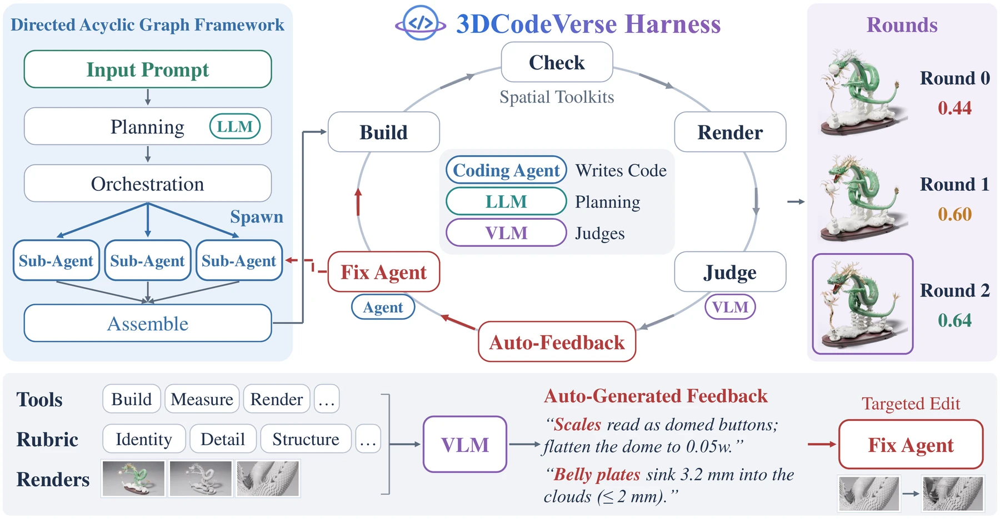

3DCodeVerse: Exploring 3D Worlds as Code
- Paper3DCodeVerse: Exploring 3D Worlds as Code
- AuthorsYipeng Gao, Ziyao Zeng, Jinfa Huang, Yijiang Li, Haolin Xiong, Wang Qin, Xinlei Yu, Youheng Yao, Jie Zhang, Kun-Yu Lin, Rong Liu, Yinyuan Zhao, Yajie Zhao, Meiqi Guo, Jiebo Luo, Lei Shu, Yunhao Ge, Xinyu Hu, Laurent Itti
- FromUniversity of Southern California, Yale University, University of Rochester, University of California, San Diego, Columbia University, Nanyang Technological University, University of California, Santa Cruz, Google DeepMind, Philo Labs
- arXivarXiv:2610.22341 (cs.CV), October 2026
- LinksProject page · Code · Dataset
3D content can be written as a program: a Blender script, a CadQuery part, a Three.js scene or a shader that, when run, builds the geometry, the articulated motion, the scene or the effect. Such content can be edited and checked. 3DCodeVerse builds the pieces coding agents need to do this at scale: a large dataset of executable 3D programs, a framework of agents that checks and refines what they build, and practical guidance from systematic experiments.


How it works
The dataset. 3DCodeVerse-2M gathers standalone 3D programs from three kinds of source. Some are collected from public resources: Bioinspired3D, 3DCodeBench, Thingiverse, Shadertoy, CodePen animations and Three.js projects. Others are converted from other representations: DeepCAD sequences and Articraft geometry become CadQuery, with Articraft's URDF kept, and ProcTHOR scenes become Blender and Three.js. The rest are new programs written with the framework below. Each program comes with the files it needs to run, three descriptions (an instruction, a visual description and a construction procedure), its provenance and license, and its verification results.
The framework. A planner defines the target, and a directed graph of sub-agents writes and assembles the program. Every version is run and measured with tools: part inventories and bounding boxes, contact and collision checks across joint poses, support and render checks. A vision-language model judges the renders against a rubric, and a fix agent makes targeted edits from this feedback, round after round, with no human in the loop.


What the paper found
On 100 prompts for 3D objects, people prefer what a model builds in this framework over what the same model builds with its own coding tools in 69% to 89% of comparisons, and the judge's score rises by 11 to 25 points. Weaker models gain most: Gemini 3.8 Flash from 61 to 87, GPT-6 Luna from 64 to 86. Against Claude Design, with Claude Opus 5.5 in both, the framework is preferred in 90% of human comparisons (judge score 88 against 37). Articulated objects, scenes and graphics show the same pattern. Fine-tuning on the dataset makes open models write code that runs: Qwen3.5-9B goes from 0% to 84.9% of programs executing on 3DCodeBench, and Qwen3.8-27B from 51.9% to 92.9%.
Where it fits
In real-to-simulation, a twin is a program. 3DCodeVerse is about writing the 3D part of such programs (geometry, articulated assets, scenes) so that they run and can be checked by tools. The paper also uses it to build articulated assets and scenes with explicit geometry and physical constraints for simulated robot tasks.